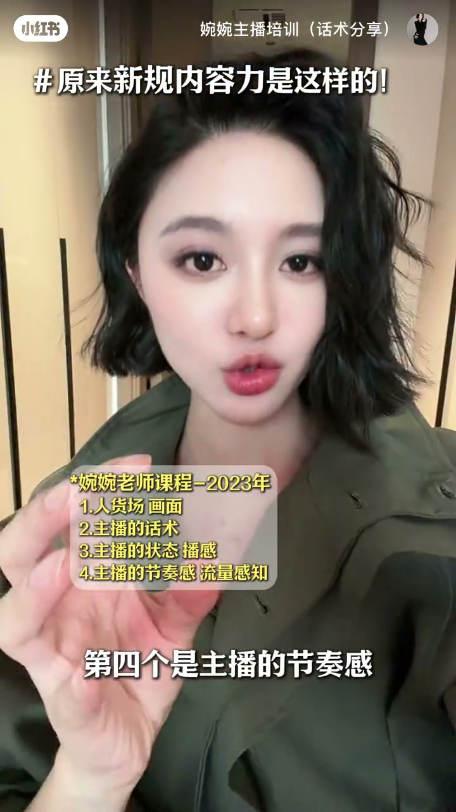
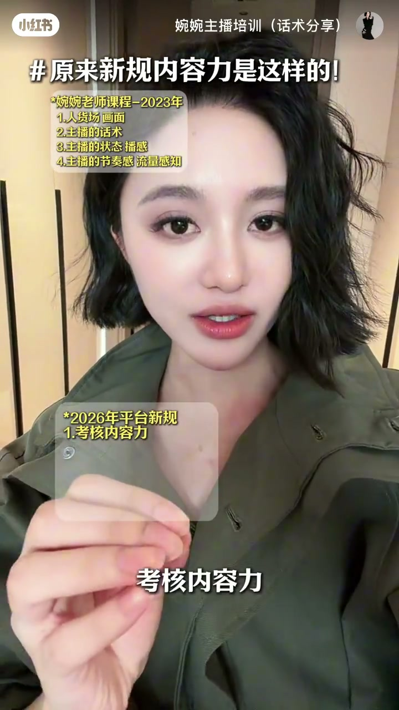
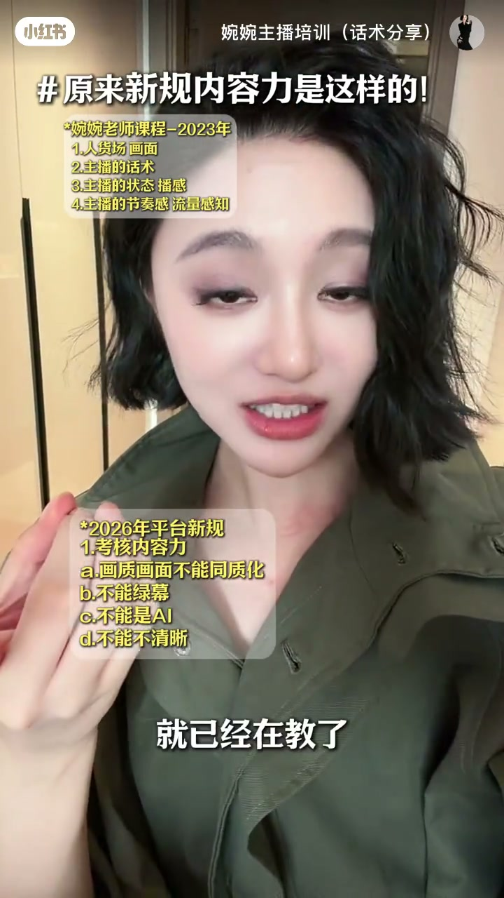
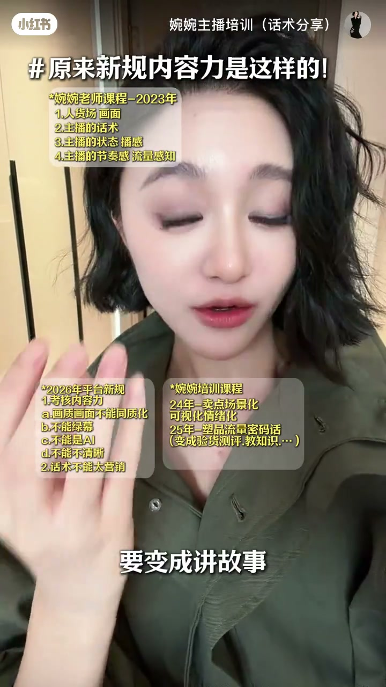
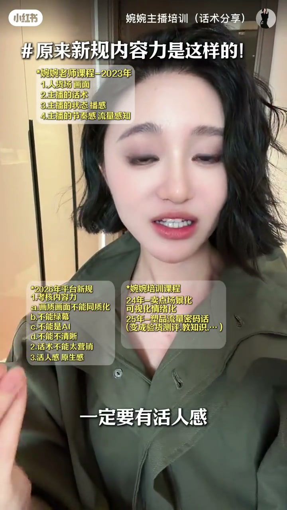
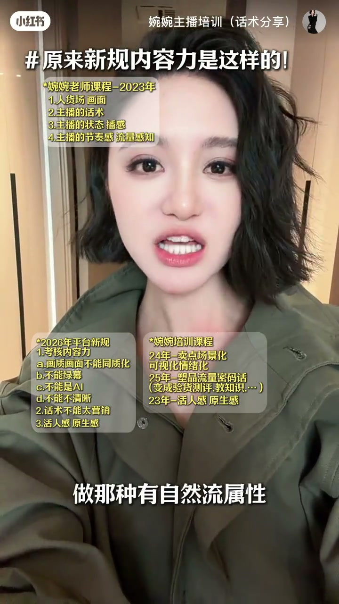
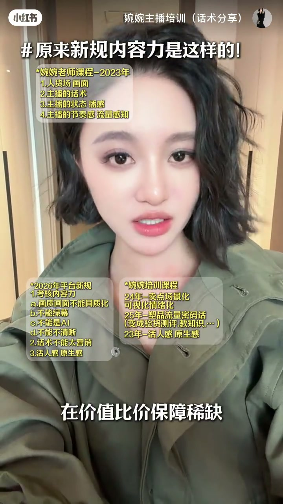

内容要点
一支 1 分 48 秒的直播内容力解读。UP 主「婉婉主播培训」宣称其 2023 年就建立的「四大能力」体系（人货场画面、话术、状态播感、节奏感流量感知）与平台 2026 年 5 月 17 日推出的内容力新规完全对齐：新规要求画质画面不能同质化/绿幕/AI/不清晰、话术不能太营销、要有活人感与眼深感，而她 2023-2025 年已在教授。最后用「先教知识再卖货」的牛奶案例与全域流量（A1-A5）逻辑，论证先做自然流围观内容再转化的卖货结构是趋势。
知识结构
作者宣称教的方法全部在平台得到验证，2023 年就建立四大能力体系：人货场画面、主播话术、状态播感、节奏感流量感知。2026 年 5 月 17 日平台推出内容力新规。
画质画面：不能同质化、不能绿幕、不能 AI、不能不清晰，否则影响推流，要有眼深感；话术：不能太营销，卖点要场景化、情绪化，内容要流量密码化、验货测评、教知识、才艺展示、讲故事。
平台要求有活人感、眼深感，作者称 2023 年就在教活人感与风格感，新规晚于其课程体系。
全域流量下直播间来的是 A1-A5 各层级人群，多数只是有购买意向而非购买行为；直接卖货会流失，要先用教知识、小课堂、小故事做自然流围观内容再转化；「教真牛奶知识再卖货」的结构是趋势。
平台内容力新规的实质是「去营销化、要活人感」：画质画面去同质化、话术去营销化、内容做成教知识/测评/故事等自然流属性。直播卖货的结构从「直接卖」转向「先做内容围观再转化」。
00:00-00:19开场：四大能力体系与内容力新规
UP 主以强自我验证开场：「我教的所有方法全部在平台上得到验证。」她将个人教学体系概括为四大能力：人货场画面、主播的话术、主播的状态播感、主播的节奏感与流量感知。
随后抛出视频核心信息：「2026 年 5 月 17 号平台推出新规，考核内容力。」——平台开始把「内容力」纳入考核，这就是本期解读的对象。

00:20-00:53新规两大硬要求：画质画面与话术
画质画面是第一道硬门槛：「不能同质化、不能绿幕、不能是 AI、不能不清晰，否则会影响流量、影响推流」，同时「一定要有眼深感」——画面要有辨识度与「演感」。
话术是第二道硬门槛：「不能太营销」。UP 主举例说明其体系如何提前布局：2024 年教卖点场景化、情绪化，2025 年教内容流量密码化——验货测评、教知识、才艺展示、慢动作展示、讲故事。
她的结论是「平台出的新规，在我们的课程体系之后」，强调自己早就开始教这些。



00:54-01:08活人感与风格感
新规还要求「一定要有活人感，要有眼深感」。UP 主称 2023 年就开始教大家有活人感、有风格感，而「2026 年 5 月 17 号才开始出这个内容力新规」，「很多博主才纷纷改课件」。
这一段的叙事逻辑是：她的方法论先于平台规则，属于对规则的提前预判而非事后跟风。

01:09-01:48全域流量：先做内容再卖货
流量逻辑已经变了：「现在全域打起来，是 A1 到 A5 什么人都有」——直播间里很多人「不是有购买行为的，只是有购买意向」。
用两个场景说明：来直播间的人「不是来买粉底液的，只是在变美的直播间待过」「不是来买牛奶的，只是在健康的直播间待过」。所以「你直接卖他东西他一定会走」，要先做「有自然流属性的围观内容」。
具体的转化结构是：30 秒到 1 分钟的「小知识小课堂或小故事」，教完再卖货。卖牛奶的主播先教「怎么样买到真牛奶」，教完直接卖——UP 主断言这种「先内容后转化」的结构「一定是趋势」。


完整转录（79段）
以下文本由 Whisper medium 模型自动转录，可能存在少量识别误差，已尽可能修正。
我真的很牛 我教的所有方法全部在平台上得到验证
证实如此 还有很多人说我很垃圾
他们对我的能力根本一无所知
我2023年我们就在教四大能力
我们的个人体系是四大能力
第一个人或场画面
第二个是主播的画数
第三个是主播的状态拨感
第四个是主播的节奏感 流量感值
2026年5月17号平安退出新规
考核内容力
流量明确指出
第一个是画质画面不能统治化
画质画面不能绿幕
画质的画面不能是AI
画质画面不能不清晰
否则会影响流量 影响推流
一定要有眼深感
我们课程2023年就已经在教了
第二个画数不能太营销
我们2024年就教八爪鱼素品
我们告诉人卖点一定要长性化
一定要可生化情绪化做实验
我们2025年我们教所有人素品
一定要流量密码化
要验货测评
要变成教知识
要变成采艺展示
慢动作展示
要变成讲故事
这一些我们2025年就在做了
就在平台没有出新规内容力之前
我们就已经在做了
而平台它出的新规
它在我们的课程体系之后
平台还要求所有人
一定要有活人感
要有眼深感
我们是从2023年
就开始教大家有活人感
有风格感
这些全部都是我们
2030 2025年的东西
然后2026年5月17号
才开始出这个内容力新规
很多博主才分分开改课间
我们早就已经在教了
我在讲一个
2025年的时候
我就说现在全域打起来
是A1到A5什么人都有
人家不是有购买行为的
人家只是有购买异乡
人家来你直播间
不是来买粉底液的
他只是在变美的直播间待过
人家来你直播间
不是来买牛奶的
人家只是在健康的直播间待过
所以人来了
你不要直接卖他东西
你直接卖他东西
他一定会走
你要先做内容让他为官
做那种有自然流属性的为官内容
比如说教知识
比如说印握测评
像这个卖牛奶的
他教大家怎么样买到真牛奶
像李一周也是存货被卖客的
他先教一个小知识
教完之后直接卖客
30秒到1分钟
来一个小知识小课堂
或者小故事
然后再卖货
再价值比价保障期缺
一定是趋势
我说的